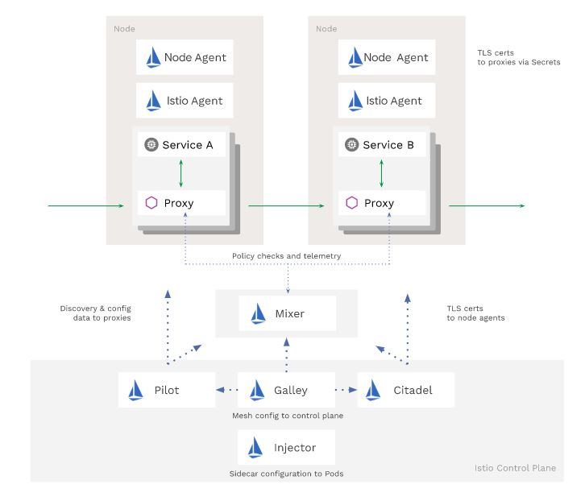
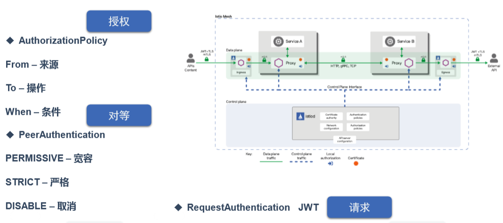
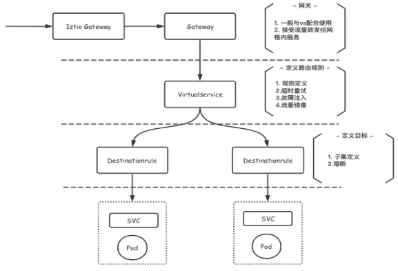

Architecture
新的 Mixer 模型使用 Envoy 中的扩展来提供更多功能。Istio 社区正在领导 Envoy 的 WebAssembly（Wasm）运行时的实现，Wasm 让我们可以使用超过 20 种的语言来开发模块化、沙盒化的扩展。可以在代理继续提供流量的同时动态加载、重载扩展
通过 preview 配置文件安装 Istio 1.5 不会再安装 Mixer
如果有需要，您可以保持安装并启用 Mixer。最终，Mixer 将成为 Istio 单独的发行组件，成为 istio-ecosystem 的一部分
简化其余控制平面的 deployment。为此，我们将几个控制平面组件合并为一个组件：Istiod。该二进制文件包括 Pilot、Citadel、Galley 和 Sidecar 注入器的功能。这种方法从许多方面改善了 Istio 的安装和管理，降低了安装和配置的复杂性、维护工作量以及问题诊断时间，同时提高了响应速度。 关于 Istiod 的更多内容请查看 Christian Posta 的这篇博客。
Istiod 作为 1.5 中所有配置文件的默认配置
从图片来看，我们正在从这里：

迁移到这里：
2020 年，我们将继续专注于普及，实现默认 零配置 的目标，该默认设置不需要您更改应用程序的任何配置即可使用 Istio 的大多数功能。

Security Policy

AuthorizationPolicy
授权认证, 精细化管理网格内的服务可以被哪些服务访问
- From-来源: 指定从哪里来的服务可以访问此由Label Selector指定的服务
- To-操作: 能访问到哪些路径,如使用get方法, Path路径等
- When- 条件: 当满足某条件的时候可以访问服务
$ cat mtls-auth.yaml
apiVersion: security.istio.io/v1beta1
kind: AuthorizationPolicy
metadata:
name: box-nginx
namespace: rancher
spec:
action: ALLOW
selector:
matchLabels:
app: nginx-primary
rules:
- from:
- source: //包括principals, host主机, IP等等更细致话配置
principals: ["cluster.local/ns/rancher/sa/box"] // 指定从namespace:rancher, serviceAccount:box 的服务可以访问标签为app=nginx-primary的服务PeerAuthentication
对等授权认证, 三种模式:
- PERMISSIVE-宽容 (default,服务间正常访问)
- STRICT-严格(网格内服务启用mtls)
- DISABLE-取消网格内的mtls
$ cat peer.yaml
apiVersion: security.istio.io/v1beta1
kind: PeerAuthentication
metadata:
name: rancher-policy
namespace: rancher
spec:
mtls:
mode: STRICT // 网格内服务必须经过mtls双向握手才能进行通信, 加强网格内服务安全性, 网格外服务是不会访问进来的RequestAuthentication JWT
Official website demo bookinfo

Gateway & VirtualService
apiVersion: networking.istio.io/v1alpha3
kind: Gateway # 相当于外部服务要访问网格内服务的第二道大门, 第一道大门是istio默认的ingressgateway网关
metadata:
name: bookinfo-gateway
spec:
selector:
istio: ingressgateway # use istio default controller
servers:
- port:
number: 80 # 定义一个80端口供别人访问, 并把80端口暴露到网关上面
name: http
protocol: HTTP
hosts: # "*" 表示访问任何主机的80端口都映射都下面的VirtualService下的destination对应的productpage
- "*" # 也指定为"httpbin.example.com", 当访问此网址时去找对应的下面的VirtualService, 但需要做解析，否则浏览器无法访问得到.
--- # 解析方法: linux: 修改/etc/hosts, windows: 修改/Windows/System32/drivers/etc/hosts
# 添加内容: `Host-Name httpbin.example.com`， 浏览器就可输入http://httpbin.example.com/productpage/200, 然后鼠标右击->Inspect->Network->Headers， 刷新网页即可看到报头
apiVersion: networking.istio.io/v1alpha3
kind: VirtualService
metadata:
name: bookinfo
spec:
hosts:
- "*" # 也指定为"httpbin.example.com", 与上面的hosts保持一致
gateways:
- bookinfo-gateway # 绑定上面Gateway, 从外部如浏览器可以访问如: curl -s http://ingressgateway-Host-IP:NodePortNumber/productpage
http: # 访问协议是http的时候才会进一步匹配
- match:
- uri:
exact: /productpage
- uri:
prefix: /static
- uri:
exact: /login
- uri:
exact: /logout
- uri:
prefix: /api/v1/products
route:
- destination:
host: productpage # 匹配上面满足后路由到对应k8s部署的svc名字叫productpage的服务, 通过kubectl get svc -n book-info查看
port:
number: 9080 # 路由到服务productpage的9080端口提供的服务
route: # 上命没有匹配到默认到productpage service
- destination:
host: productpage
port:
number: 9080VirtualService
apiVersion: networking.istio.io/v1alpha3
kind: VirtualService
metadata:
name: reviews
spec: # 没有绑定gateway, 因此从外部还无法访问
hosts:
- reviews
http:
- route:
- destination:
host: reviews
subset: v1 # 对应下名DestinationRule reviews中的name: v1
weight: 80 # 路由权重
- destination:
host: reviews
subset: v1 # 对应下名DestinationRule reviews中的name: v2
weight: 20DestinationRule
apiVersion: networking.istio.io/v1alpha3
kind: DestinationRule # 路由指向由host指定的svc下面通过Label selector包含的特定POD
metadata:
name: reviews
spec:
host: reviews # 对应k8s部署的svc名字叫productpage, kubectl get svc -n book-info
trafficPolicy:
loadBalancer: # 1.负载均衡 2.断路器 3.TLS 等等
simple: RANDOM
tls:
mode: ISTIO_MUTUAL
subsets:
- name: v1
labels:
version: v1 # 对应pod的Labels标签里有version=v1, 可通过kubectl describe po/reviews-** -n book-info查看Labels.
- name: v2
labels:
version: v2
- name: v3
labels:
version: v3通过网关访问服务:
$ curl -I -HHost:httpbin.example.com http://$INGRESS_HOST:$INGRESS_PORT/productpage/200
上面命令将浏览器访问http://httpbin.example.com/producpage 对应的解析为 http://$INGRESS_HOST:$INGRESS_PORT/productpage/200
这里-H选项是设置主机的HTTP报头为httpbin.example.comDashboard & log
Dashboard
controlz: 日志, 也可用kubectl logs查看不过不够直观
envoy
grafana
jaeger: 查看traces
kiali
prometheus
zipkin: 查看traces
查询istio提供了哪些dashboard
$ istioctl dashboard查看或修改指定pod的log
$ istioctl dashboard controlz istiod-5f47bf5895-lzm6w -n istio-system
$ istioctl dashboard controlz istiod-5f47bf5895-lzm6w -n istio-system --address=192.168.22.184 // 添加了address监听地址
http://localhost:40230
然后浏览器输入http://localhost:40230就可看到log信息查看envoy dashboard, 前提是跑业务的pod中部署了envoy proxy
$ istioctl dashboard envoy prometheus-xxx -n istio-system
$ istioctl dashboard envoy prometheus-xxx -n istio-system --address=192.168.22.184log
查看某个pod日志
$ kubectl logs po/XXX -n Namespace修改整个istio的日志模式
$ kubectl edit cm istio -n istio-system
......
data:
mesh: |-
accessLogEncoding: TEXT // 日志默认是TEXT格式输出，可以改为json模式, 再序列话可以很直观查看进出istio envoy的流量的方向, 上下流等.转载请注明来源，欢迎对文章中的引用来源进行考证，欢迎指出任何有错误或不够清晰的表达。可以在下面评论区评论，也可以邮件至 jaytp@qq.com